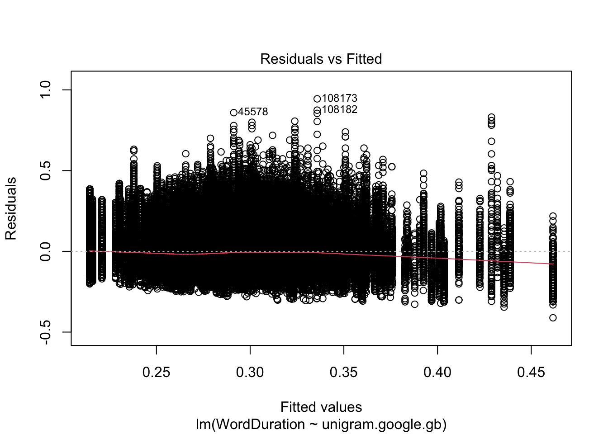
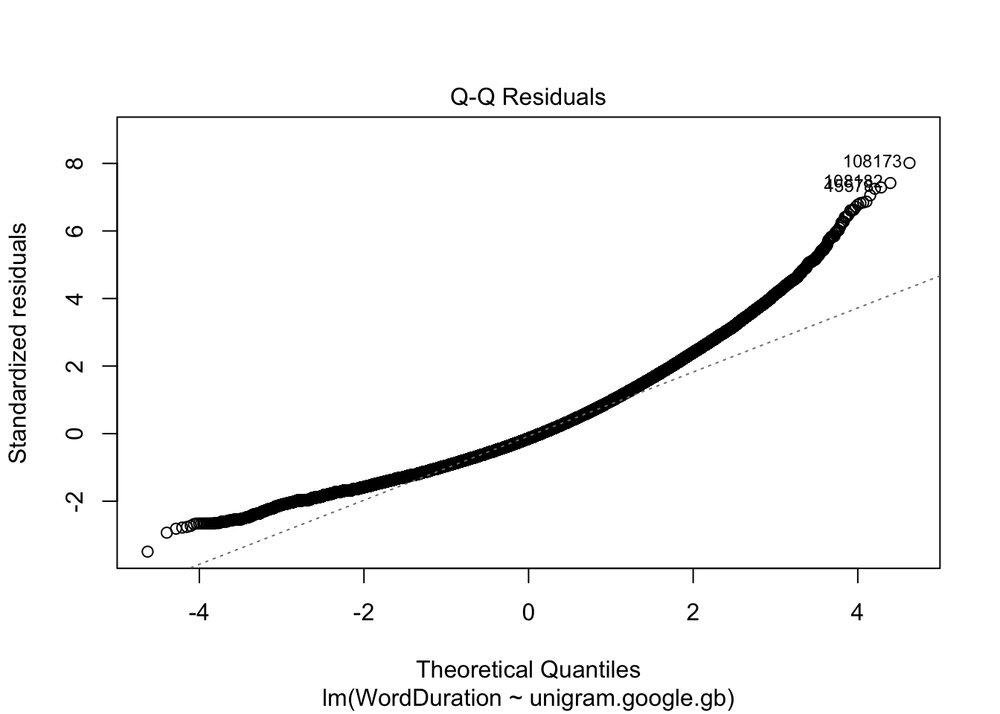
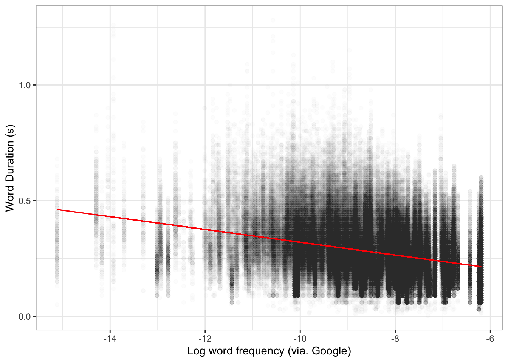
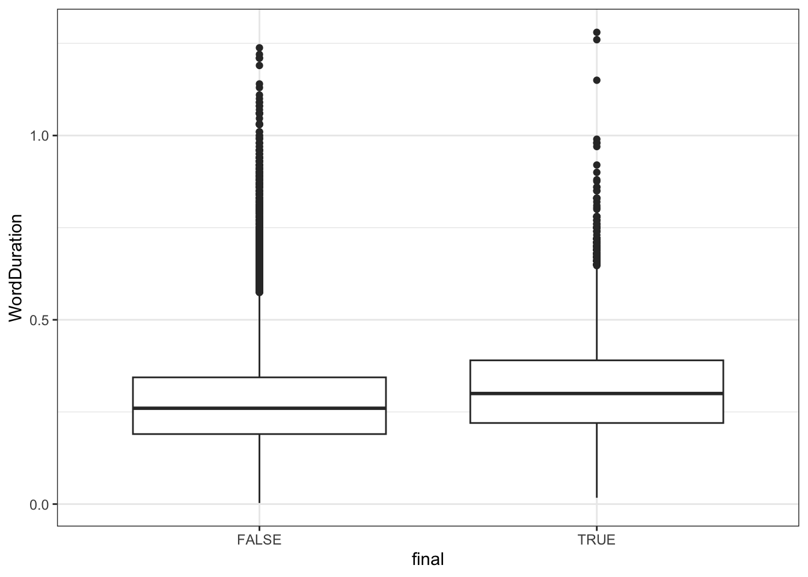
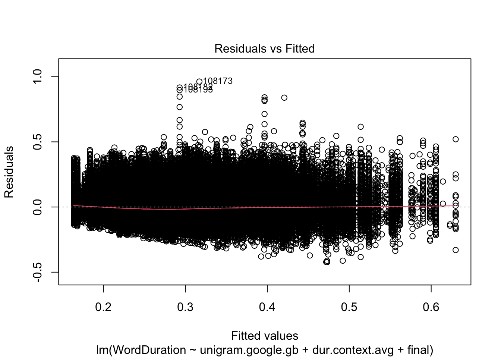
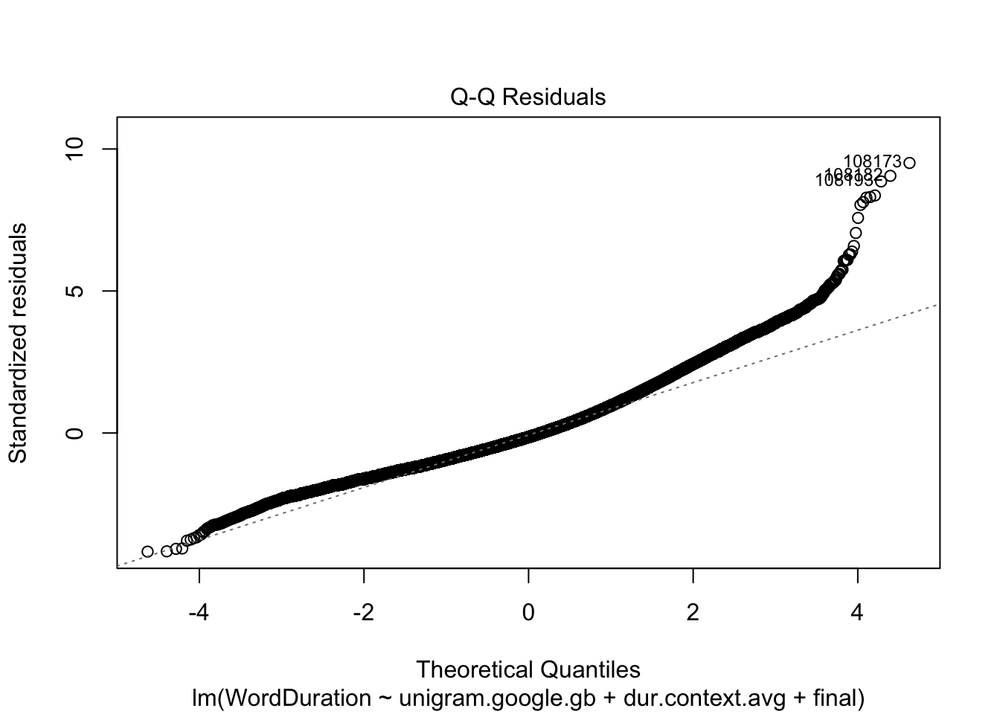
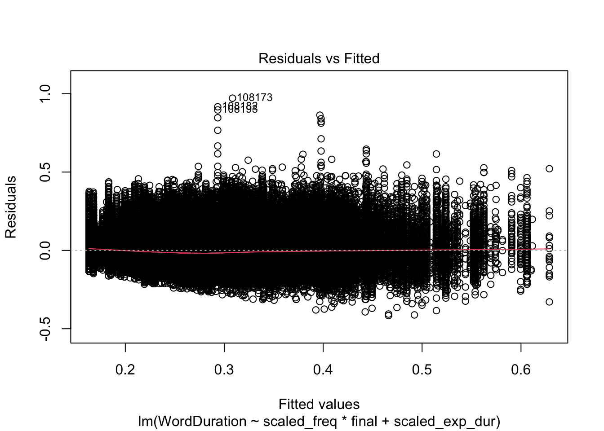
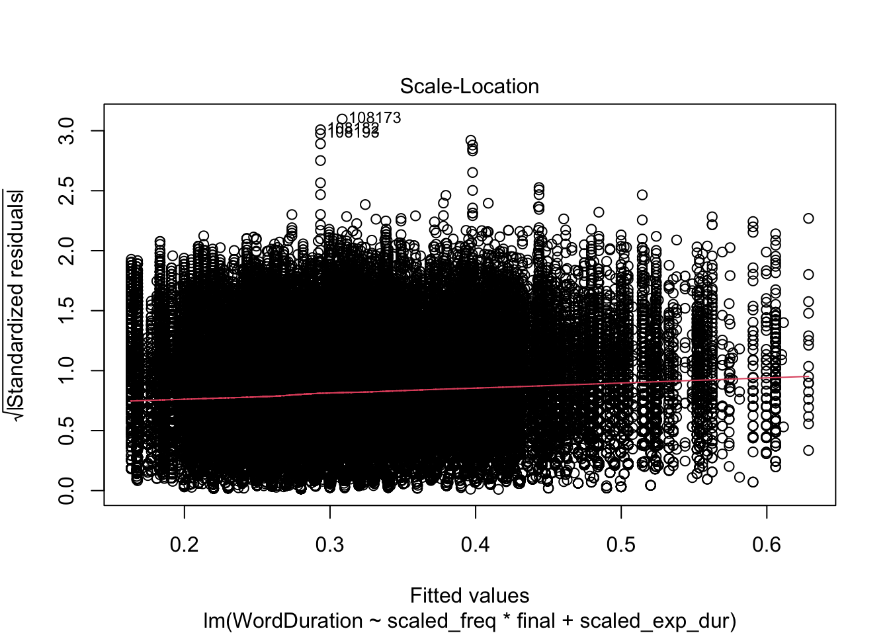
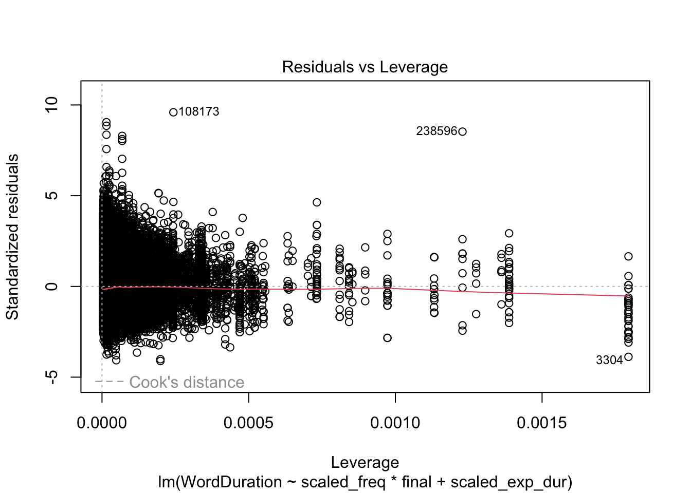
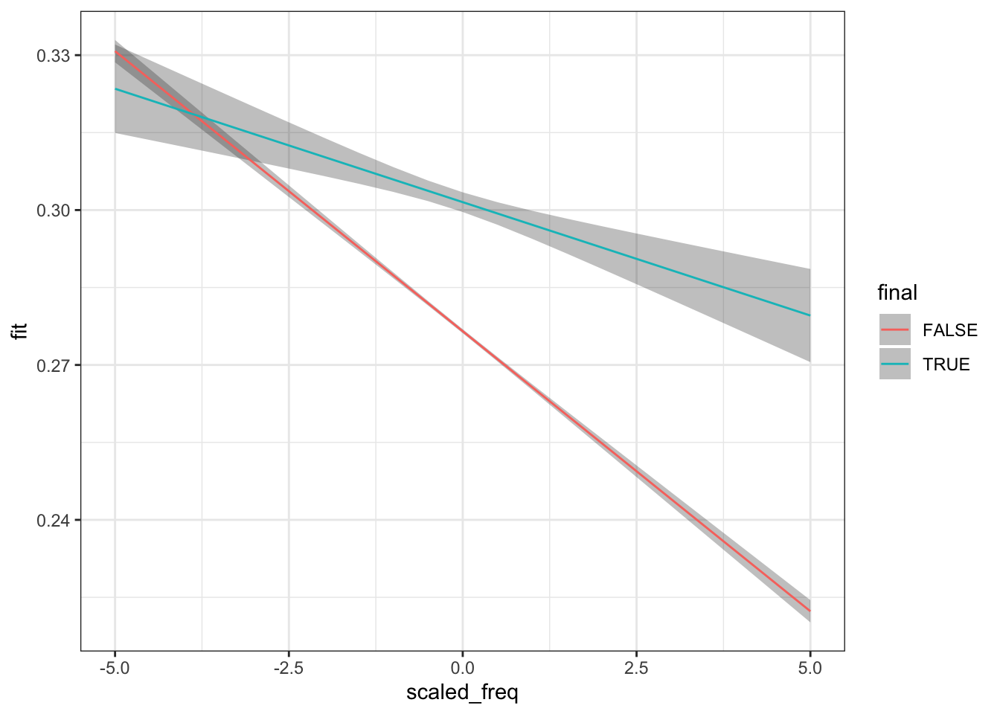

In this chapter we continue to explore the duration and word frequency data from Sóskuthy and Hay (2017). In the previous chapter we learned how to set up an R project in RStudio and plotted the data in various ways using ggplot2. In this chapter, we turn to modelling the data. In particular, we look at a very useful class of models: linear models. We’re going to draw some straight lines.
What is a model? It’s a simplified representation of something. The phenomena we’re interested in in the human sciences, including linguistics, are incredibly complex. We have various strategies for reducing this complexity. Statistical models are an important (but not the only!) tool for this. Such models usually find patterns of association between variables in a data set. These patterns might then be used to predict future data, explain one variable in terms of others, or explore looking for surprising features of the data which might motivate future research.
This chapter will quickly run through some of the key workflow steps in fitting a linear model. We’ll start with a ‘simple linear regression model’ (Section 4.2). We’ll use a straight line to represent the relationship between word duration and word frequency. We’ll follow this workflow:
Plot data.
Fit a linear model using lm().
Check residual plots.
Look at the model summary (summary()).
Plot predictions.
There is no need to do things in exactly this order all the time. But this is a nice pattern. Certainly, whatever pattern or workflow you do use, you should spend some time thinking about it.
We’ll then add additional variables to the model (Section 4.3), and consider how to fit interactions between variables (Section 4.4).
You will notice, in Section 4.6, that the material covered in this chapter corresponds to eight chapters in Winter (2019). We’re moving fast here. As you get in to your own projects, with your own data, you will need to explore each of these topics in more detail.
4.2 Simple Linear Regression
4.2.1 Straight Lines
At simplest, a linear model is just a straight line fit through data. If we have a two-dimensional space with a horizontal \(x\)-axis and a vertical \(y\)-axis, then we can specify any straight line using two numbers: the intercept and the slope. The intercept tells you where the the line intercepts the \(y\)-axis and the slope tells you how steep the line is.
Figure 4.1: A collection of lines with the intercept indicated by a point. Text annotation indicate the slope term.
In Figure 4.1, the intercept is indicated with a large point. We see five distinct intercepts. The slope is indicated by the numbers in labels. Two of these are negative numbers, and the corresponding lines are going down as you look from left to right. The positive slopes correspond to lines which go up as you view from left to right. The larger the magnitude of the slope (i.e., the size of the number, ignoring whether it is positive or negative), the steeper the line.
Mathematically, a line in two-dimensional space is represented by the equation \(y = a + bx\), where \(a\) is the intercept term and \(b\) is the slope term. If you increase the intercept term, then \(y\) increases across the board. That is, changing the intercept moves the line up and down. The term \(b\) represents a relationship between the variables \(y\) and \(x\). If \(b\) is positive, then as \(x\) increases, \(y\) will also increase. If it is negative, \(y\) will decrease as \(x\) increases.
Which line has the slope closest to zero?
Which line has the intercept closest to zero?
What slope value does a horizontal line have?
4.2.2 Word Frequency and Word Duration
In the data set we looked at in the last chapter, we considered explanations of word duration and word frequency. We can fit a straight line through our data concerning word duration and word frequency. If we can do this, then the slope term should tell us something about the relationship between word duration and frequency. That is, we are modelling for the purpose of explanation.
We start our workflow by plotting the data. We already started this work in the previous chapter. Let’s look at a scatter plot again (Figure 4.2).
big_dia |>ggplot(aes(x = unigram.google.gb,y = WordDuration ) ) +geom_point(alpha =0.01) +# Let's add some labelslabs(x ="Log word frequency (via. Google)",y ="Word Duration (s)" )
Figure 4.2: Scatter plot of word frequency and length.
Figure 4.2 is characteristic of the messy data we find in work with large corpora of linguistic data. The key thing to note here is whether there is a shortage of data anywhere (here, we would notice, for instance, that the lower frequency areas to the left of the plot are much more sparce than the higher frequency areas), whether there are any data points which are totally implausible (and perhaps represent measurement errors). Check any such points. You may need to filter them out (using functions we have already looked at in the previous chapter).
The next step is to fit the model using lm(). Linear regression typically fits a straight line by ‘least squares’. It finds the line which minimises the sum of the squared differences between the line and the actual data points in the \(y\) dimension. Put simply, it finds the slope and intercept which are ‘closest’ to the actual data.
We specify a model using the formula argument. We can use variable names from our data set. If we do this, we have to specify the data set using the data argument. The formula for a simple linear regression just has the name of the variable to be explained (the ‘response’ variable) on the left of a ~ sign and the variable which we will use to explain it (the ‘explanatory’ variable) on the right.1 The following code block fits a simple model and associates it with the name simple_fit.
The next step in our workflow is to check residual plots. The main ways in which a linear model can fail are present in ‘residual plots’. There are a few things to look for (see Winter 2019, 6.1). A ‘residual’ is the difference between a particular data point and the line. The residuals are the variation which is not captured by the model. We assume that this is normally distributed random noise. If there are clear patterns in the residuals, then we have good reason to think our model is missing something important.
In R, we can use the plot() function to generate ‘diagnostic plots’ of our residuals. When plotting the result of a linear model, we can use the which argument to specify which of the four available diagnostic plots we want.2 The first plot is a plot of the ‘fitted’ values and the residuals (Figure 4.3.
plot(simple_fit, which =1)

Figure 4.3: Scatter plot of fitted values and residuals from our simple linear regression model.
Figure 4.3 should look like a big slug. If we look along the \(x\) axis, we see ‘fitted’ values. So, for instance, if we look up in the straight vertical line from at \(0.30\) on the \(x\) axis, we see the range of residuals whenever the model says that \(y\) is \(0.30\). We don’t want any kind of ‘fan’ pattern here, where the distribution of residuals is much wider at one side of the plot than the other.
With this plot, and others like it, we are looking for large violations of the assumptions, rather than ensuring the the assumptions are perfectly satisfied.
The most worrying thing about this plot is the red line, which shows the mean values of the residuals departs from \(0\) as the fitted values increase. This suggests there might be some kind of non-linearity in the data.
I also find ‘QQ plots’ useful. We can access this with which = 2.
plot(simple_fit, which =2)

Figure 4.4: Quantile-quantile plot from our simple linear regression model.
Figure 4.4 should show a series of points in a straight line. This is more or less true in the middle of the curve, but is violated heavily at both ends of the curve. This shows that we are missing something important in our simple model.
What does this kind of plot show? We assume out residuals are normally distributed. The ‘theoretical quantiles` indicate the value we would expect from normally distributed residuals, the ’standardised residuals’ are the values we actually observe, but appropriately scaled. The fact that the curve is above the straight line indicates that there are many words which have much longer duration that we would assume given only information about the word frequency, and the assumptions of the linear regression model itself (including, importantly, that the relationship can be captured by a straight line.)
Now, it is important to note that word durations cannot be less than 0. The right side of the plot represents cases where the model underestimates the actual duration. There are more opportunities for data points to have very high positive residuals than very high negative residuals.
But, in any case, we have some reason to be sceptical that our model is capturing the patterns at the edges of the data. We should keep this in mind as we move to the next phase of our workflow: look at the model summary. Violation of model assumptions reduces the confidence we should have when looking at its results.3
It can be frustrating for someone to tell you things like ‘be a bit sceptical’, or, ‘this is basically fine, but not perfect’ when looking at this kind of diagnostic plot. You want clear answers to your questions. Unfortunately clear answers don’t always exist. But, in lieu of a perfect criterion for residual plot badness, the following code block produces data which, when modelled by a linear model, produce a very bad residual plot and a dubious QQ plot (Figure 4.5).
Figure 4.5: Simulated data with wave pattern. Panel A shows raw data and linear fit, panel B shows the residual plot, with a clear sin wave pattern rather than the (expected) random cluster. Panel C shows a QQ plot indicating residuals with more extreme values than expected from a linear model.
The summary() function outputs key features of the model.4 Let’s look at the output:
summary(simple_fit)
Call:
lm(formula = WordDuration ~ unigram.google.gb, data = big_dia)
Residuals:
Min 1Q Median 3Q Max
-0.41159 -0.08406 -0.01667 0.06675 0.94423
Coefficients:
Estimate Std. Error t value Pr(>|t|)
(Intercept) 0.042965 0.001441 29.82 <2e-16 ***
unigram.google.gb -0.027695 0.000168 -164.85 <2e-16 ***
---
Signif. codes: 0 '***' 0.001 '**' 0.01 '*' 0.05 '.' 0.1 ' ' 1
Residual standard error: 0.1178 on 271762 degrees of freedom
Multiple R-squared: 0.09091, Adjusted R-squared: 0.09091
F-statistic: 2.718e+04 on 1 and 271762 DF, p-value: < 2.2e-16
We start with a Call which says what the R statement which generated the model was (including the formula). We then see information about the distribution of the residuals, before the Coefficients: section. This is where we will find the intercept and slope terms of our model. The (Intercept) term tells us what the model predicts when \(x\) is 0. i.e., when the log word frequency is 0. Is this a useful thing to know? Have a look at the scatter plot and see what this would correspond to in terms of our data (Figure 4.2). We will consider some alternatives later. We look at the Estimate column to see the estimated value of the coefficients. In this case, we estimate a word duration of 0.04 when the log word frequency is 0.
We then look at the unigram.google.gb row. This will tell us the slope of the line. The best straight line through the data has a slope of -0.028.
What else is in the table? Information which quantifies our uncertainty about the estimates and tests of how consistent the data is with the absence of an effect. That is, we’ve got a series of tests of null hypotheses. For the intercept, the null hypothesis is that the intercept is zero. For the slope, the null hypothesis is that the slope is zero. The t value column contains ‘test statistics’ which summarise features of the data set with respect to the hypothesis that there is no effect. The Pr(>|t|) columns gives ‘p values’, which indicate the probability of observing the test statistic, or a more extreme value, if there is no actual effect. Low values, traditionally values less that 0.05, lead us to ‘reject the null hypothesis’. In this case, then, we reject the null hypothesis for both the intercept term and the slope term. The effect of word frequency on word duration is ‘statistically significant’ in this model.
The final stage of our workflow is to plot the predictions. We get access to the predictions using the predict() function.5 We use the interval argument to specify that we want confidence intervals around the predictions and setting the confidence level to 95% (a standard convention).
model_preds <-predict( simple_fit, interval ="confidence",level =0.95)# We join the predictions to the original data in order to plot them together.simple_preds <-bind_cols(big_dia, model_preds)# Here's 10 random rows.simple_preds |>select(WordDuration, unigram.google.gb, fit, lwr, upr) |>slice_sample(n=10)
The output above shows the actual word duration scores, word frequencies, model predictions (fit) and lower (lwr) and upper (upr) bounds on the confidence intervals for 10 random rows of the data.
We can plot this without the original data as follows:
simple_preds |>ggplot(aes(x = unigram.google.gb,y = fit,ymin = lwr,ymax = upr ) ) +geom_ribbon(alpha =0.5) +geom_path(colour ="red") +labs(x ="Log word frequency (via. Google)",y ="Predicted Word Duration (s)" )
Figure 4.6: Model predictions with 95% confidence intervals.
Figure 4.6 has an incredibly small confidence interval. This is because of the very large size of the data set!
And with data:
simple_preds |>ggplot(aes(x = unigram.google.gb,y = WordDuration ) ) +geom_point(alpha =0.01) +# Let's add some labelsgeom_ribbon(aes(y = fit,ymin = lwr,ymax = upr ),alpha =0.5 ) +geom_path(aes(y = fit ),colour ="red") +labs(x ="Log word frequency (via. Google)",y ="Word Duration (s)" )

Figure 4.7: Model predictions with 95% confidence intervals and original data.
Sometimes it is valuable to plot the model alongside the raw data. It can make it more visually clear just how much variation there is from the model. However, real patterns in large corpus data sets may be very small relative to the range of raw data values. This can make plotting both model and data in a single plot impractical.
Explanation and Correlation
Why are we trying to explain word frequency using word duration rather than the other way around? There is no mathematical difference between the two options.
The simple answer is that we can think of plausible cognitive mechanisms by which word frequency might influence word duration. At simplest, this is something like the view that frequent signals are easier to process and this enables them to be ‘reduced’ in various ways, including in duration.
The alternative direction of explanation would propose that we have a tendency to prefer shorter words, so that words that are on average shorter somehow become more frequent. This doesn’t make sense for a number of reasons. For one thing, we are looking at word duration by token. If there were a push towards shorter and shorter words at this level, you would expect it to lead to faster speech across the board.
The point is that we always interpret statistical models through previous research and more general intuitions about plausibility. These might end up being wrong, but we have to assume something to get an experiment or study going!
Now, run through the simple linear regression workflow with the variable called prev_pred_wf_log in the data frame. This variable tells us how probabile the word whose duration we are measuring is given the previous word. This may take a while.
Looking at the model summary for your simple linear model, using the summary() function, answer the following questions:
Which of the following numbers is closest to the intercept coefficient?: .
Which of the following numbers is closest to the slope coefficient?:
What is the name of the slope coefficient in the model output?:
Complete this sentence: If prev_pred_wf_log is increased by 1, then WordDuration by seconds.
4.3 Multiple Linear Regression
In simple linear regression, we have a single explanatory variable. In multiple linear regression, we have more than one. There are a few different considerations when we do this. We’ll separately look at adding categorical variables (columns which contain a finite number of ‘categories’: e.g. social categories like class or linguistic categories like what kind of consonant follows a vowel) and continuous variables (roughly, columns which contain numbers).
Often, many variables are involved in the phenomena we explore or the hypotheses we test. Sometimes we add variables which we know have an independent effect on the response variable, but which we aren’t directly interested in, in order to control for the effect. This allows us to say things like: “holding the speed at which someone speaks constant, the height of this vowel increases as a person ages”. We thus avoid attributing variation due to the ‘control’ variable to the other variables we are investigating. This will make more sense with some examples.
Do not just add all the variables you have as ‘control’ variables. Sometimes a ‘control’ variable can create effects which are not real. Think about each variable you add to a model.6
4.3.1 Adding a Categorical Variable
There are a few categorical phenomena which affect word duration. For instance, whether or not a word appears at the end of an utterance affects its duration. We can incorporate this information by adding a variable to the model which tracks whether observed word occurs at the end of an utterance or not.
Why do we want this information? We might be worried that our sample of low frequency words just happens, by random chance, to contain a lot of tokens from the end of an utterance. We might then see an effect of word frequency which is actually due to where the words in our sample appear in an utterance. This is very unlikely in the dataset we are currently using, due to its sheer size (271764 tokens). But it could very well be a factor in a smaller data set.
More generally, we hope that our model is the best depiction of the features of the phenomena we are interested in which we can manage with the data at hand. If we suspect some variable has an independent effect of the response variable, and there is no other downside to including it, it is good to include it in the model.7
Let’s have a quick visual look at the variable called final in the big_dia dataset. We’ll use a box plot.
big_dia |>ggplot(aes(x = final, y = WordDuration ) ) +geom_boxplot()

Figure 4.8: Box plot indicating word duration by position in utterance (utterance final vs. non-final).
On the \(x\) axis, we distinguish whether an observed word token appears at the end of an utterance or not. On the \(y\) axis we see the word duration. The line in the middle of a box plot indicates the median value within the relevant category. So, for instance, the line in the middle of the left box indicates the median word duration in seconds for word tokens which do not appear at the end of an utterance.
Figure 4.8 suggests that words which appear at the end of an utterance are slightly longer than those which appear elsewhere in an utterance.
In order to include this variation in a linear model, we simply add the variable to the formula using the + sign, as follows:
Carry out the graphical model checking steps we introduced for simple linear regression above with the multiple_fit model.
True or false? - Adding final fixes the problem of decreasing residuals as fitted values increase in the model without final (i.e., Figure 4.3): . - Adding final fixes the violations of normality of the residuals as depicted in Figure 4.4: .
What does this look like in the model summary? We will look at the coefficients only. To get at the coefficients table in a convinent way, we can use the tidy() function from the tidymodels package.
The most obvious difference is that we now have a row in our coefficients table called finalTRUE. But to understand how final is included in the model, we need to look at the intercept value again. Categorical variables are represented as having a ‘base’ level.8 In this case, FALSE is the base level. This means that the intercept value for this model is the intercept value when the word is notat the end of an utterance. The estimate of the coefficient finalTRUE tells us how much longer a word is when it appears at the end of an utterance. In this case, the estimate is 0.03. So, on the whole, words at the end of utterances are estimated to be 0.3 seconds longer than words which are not at the end.
As in the previous case, we are given \(p\)-values for each of these estimates. The very low \(p\)-values in this case indicate that the data at hand is not compatible with these estimates being zero. That is, there is a ‘statistically significant’ associated with each of these coefficients.
To three significant figures, is the slope coefficient for unigram.google.gb in the multiple_fit model different from the slope in simple_fit?
To three significant figures, is the coefficient labelled (Intercept) different in the multiple_fit and simple_fit models?
Do all the \(p\)-values in the coefficient table for multiple_fit indicate statistical significant? .
We now want to plot the model predictions. The following code extracts model predictions for some specified points, rather that for every data point in the data frame. We use crossing() from the tidyr package (loaded as part of the tidyverse) to say we want every combination of the values we list. We then feed the result of this to the predict() function using the newdata argument.
# specify the values we want predictions for.to_predict <-crossing("unigram.google.gb"=c(-15, -10, -8, -7),"final"=c(TRUE, FALSE))# get predictions using `predict()`.multiple_preds <-predict( multiple_fit, newdata = to_predict,interval ="confidence"# The interval argument says we want a confidence# interval for each prediction too.)# combine predictions with the values we specified.multiple_preds <-bind_cols(to_predict, multiple_preds)
We plot the predictions using distinct colours for utterance final and non-final words.
Figure 4.9: Predictions from model predicting word duration using word frequency and word finality.
There are two things to note in Figure 4.9. First, we see that the confidence bars are wider for words which are utterance final. This is simply because there are fewer of them in the data set. Second, note that difference between the two lines is just how high up they are on the y axis. This is because our model does note have any way to vary the slope for each level of the final factor. We will see how to add this complexity in Section 4.4.
4.3.2 Adding a Continuous Variable
Let’s now look at adding a continuous variable to our simple linear regression.
We don’t have any sense yet of how long we would expect a given word to be. The variable dur.context.avg gives a sense of the length of a given word, averaged across the various contexts in which it appears. Here’s what the variable looks like in a scatter plot with word duration:
Figure 4.11: Plot of word duration given expected duration (dur.context) with simple linear regression.
The measure of expected duration is positively related to the actual measures of duration. This is a good check that we are on the right track.
Let’s add this measure to our model. Again, we just use a +. We will reuse the variable name multiple_fit.
multiple_fit <-lm(# I will stop explicitly saying 'formula =' now. WordDuration ~ unigram.google.gb + dur.context.avg + final,data = big_dia)
Are the diagnostic plots any better?
plot(multiple_fit, which =1)

Figure 4.12: Residual plot of multiple regression fit using word frequency, expected duration, and utterance-finality.
This is a bit better than Figure 4.3. There is no systematic loss of performance as word durations increase.
plot(multiple_fit, which =2)

Figure 4.13: QQ-plot of multiple regression fit using word frequency, expected duration, and utterance-finality.
Figure 4.13 indicates some improvement in the cases where the model overestimates the duration (i.e., cases where the residual is negative, sitting at the left side of the plot). The model’s performance when it underestimates is worse. The reason for this is likely to be the same as discussed at Figure 4.4.
We now look at the coefficients, again using the tidy() function.
We have another coefficient now: dur.context, indicating a very small increase in word duration for increases in expected duration in context. Note that adding a continuous variable has resulted in changes across the board to our coefficients. While previously, we estimated that an increase in unigram.google.gb or 1 resulted in a reduction in word frequency of around 0.03 seconds, we now estimate a reduction of 0.008 sections and instead treat dur.context.avg as the biggest driver of change in word duration. An increase of dur.context.avg by 1 is estimated to result in an increase of 0.69 seconds in word duration.
The intercept term and finalTRUE also change, in line with the interpretation of these coefficients as estimated values for each value of final when the other variables are held at 0. That is, the value for (Intercept) is for a non-utterance final word when both unigram.google.gb and dur.context.avg are at 0. That is, a word whose duration in context is expected to be 0, and whose frequency is 1, that is, it is the only word in the corpus from which the frequency data is derived. This is obviously not a meaningful scenario.9 We’ll find a way to avoid it after we plot this models predictions.
We extract predictions in the same way as before.
# specify the values we want predictions for.to_predict <-crossing("dur.context.avg"=seq(0, 1, 0.1),"unigram.google.gb"=seq(-15, -7, 1),"final"=c(TRUE, FALSE))# get predictions using `predict()`.multiple_preds <-predict( multiple_fit, newdata = to_predict,interval ="confidence"# The interval argument says we want a confidence# interval for each prediction too.)# combine predictions with the values we specified.multiple_preds <-bind_cols(to_predict, multiple_preds)
This time, we’ll start with a kind of heat map using tiles.
Figure 4.14: Plot of model predictions for model using word frequency and average predicted duration.
Figure 4.14 is an example of a kind of plto which can be useful for models with two continuous predictors. In this case, it clearly reveals that the effect of predicted baseline duration in simulated speaker overwhealms the effect of word frequency.
But, we are often interested in small effects. We can instead, plot the effect of word frequency, holding predicted duration constant.
The following code produces a bad plot of the effect of word frequency on word duration.
Figure 4.15: An attempted figure illustrating model predictions of the effect of word frequency on word duration.
Fix the plot by adding a filter() function before the use of the ggplot() function to ensure that the plot only includes cases where the baseline duration is 0.5 seconds.
Complete the required line: filter(dur.context.avg0.5)
4.3.3 Scaling explanatory variables
We’ve seen above that the (Intercept) term is not particularly meaningful if 0 is not a sensible value for the quantitative explanatory variables in a model. This is one of many reasons why it is a good idea to scale quantitative variables before modelling. Scaled variables have 0 as the mean value. This means that we can interpret the (Intercept) coefficiant as the predicted value when the quantitative variables are at their mean values.
The following code block refits the previous model, but scales the quantitative explanatory variables first. It them outputs the coefficients.
big_dia <- big_dia |>mutate(# Note the '[,1]'. This is because scale() produces a dataframe where only# the first column (the scaled values) is what we want.scaled_freq =scale(unigram.google.gb)[,1],scaled_exp_dur =scale(dur.context.avg)[,1] )multiple_fit <-lm(# I will stop explicitly saying 'formula =' now. WordDuration ~ scaled_freq + scaled_exp_dur + final,data = big_dia)tidy(multiple_fit)
Note that the intercept term is now interpretable as the mean duration for a non-utterance-final word with a mean frequency and mean expected duration. We also have the advantage that, for instance, the estimate for scaled_freq now tells us what happens if we increase the frequency by one standard deviation.
4.4 Interactions
What if frequency affects utterance-final words more than non-utterance-final words. To deal with this, we need to introduce interactions.
interaction_fit <-lm(# I will stop explicitly saying 'formula =' now. WordDuration ~ scaled_freq * final + scaled_exp_dur,data = big_dia)summary(interaction_fit)
Call:
lm(formula = WordDuration ~ scaled_freq * final + scaled_exp_dur,
data = big_dia)
Residuals:
Min 1Q Median 3Q Max
-0.41607 -0.06994 -0.01439 0.05591 0.97166
Coefficients:
Estimate Std. Error t value Pr(>|t|)
(Intercept) 0.2765346 0.0001983 1394.388 < 2e-16 ***
scaled_freq -0.0108482 0.0002168 -50.040 < 2e-16 ***
finalTRUE 0.0249968 0.0009926 25.184 < 2e-16 ***
scaled_exp_dur 0.0656325 0.0002126 308.768 < 2e-16 ***
scaled_freq:finalTRUE 0.0064553 0.0008932 7.227 4.95e-13 ***
---
Signif. codes: 0 '***' 0.001 '**' 0.01 '*' 0.05 '.' 0.1 ' ' 1
Residual standard error: 0.1013 on 271759 degrees of freedom
Multiple R-squared: 0.3286, Adjusted R-squared: 0.3286
F-statistic: 3.326e+04 on 4 and 271759 DF, p-value: < 2.2e-16
plot(interaction_fit)



Here’s a plot of predictions derived from the model.
# specify the values we want predictions for.to_predict <-crossing("scaled_exp_dur"=seq(-3, 3, 0.5),"scaled_freq"=seq(-5, 5, 0.5),"final"=c(TRUE, FALSE))# get predictions using `predict()`.interaction_preds <-predict( interaction_fit, newdata = to_predict,interval ="confidence"# The interval argument says we want a confidence# interval for each prediction too.)# combine predictions with the values we specified.interaction_preds <-bind_cols(to_predict, interaction_preds)interaction_preds |>filter( scaled_exp_dur ==0 ) |>ggplot(aes(x = scaled_freq,y = fit,colour = final ) ) +geom_ribbon(aes(ymin = lwr,ymax = upr ),alpha =0.3,linetype =0 ) +geom_line()

Figure 4.16: Model predictions from model placing frequency in interaction with utterance-finality.
Figure 4.16 shows an interaction between utterance-finality and frequency, here assuming a word with a mean expected duration. We might say that the effect of frequency is moderated by utterance-finality. If a word is at the end of an utterance, then the reduction we would expect due to an increase in word frequency is reduced compared to non-utterance-final words.
What on earth is a word with mean expected duration? Use any data transformation approach you like to try to find the most average word in this respect.
Which word is closest to a scaled_exp_dur value of 0?:
Try the same trick for scaled_freq? - Which word is closest to a scaled_freq value of 0?:
4.5 What’s Missing?
There are a series of assumptions that are made when building a mathematical model. These are the assumptions which come along with the mathematical machinery used to back up the models. These are always violated in the real world. Some statistics texts become obsessed with checking assumptions. This can become excessive. In cases with multiple continuous variables, it is worth checking for colinearity because it can lead to very unstable coefficients. In so far as these coefficients tell us how big an effect is, unstable coefficients have a significant impact on the scientific conclusions we draw from a model. But the primary thing to check is for normality of the residuals, as we did in the diagnostic plots above.
The primary assumption of linear regression which we have considered above is normality of the residuals. We want the variation which is left behind by our model to have no obvious structure. But these is another very important assumption of linear regression models: that each data point is independent. A simple way to think of this, is that every data point provides just as much information to the model as any other. But this is not true in many cases.
When using corpora or carrying out experiments, we take multiple measurements from individual listeners or speakers. Each of these listeners or speakers has idiosyncratic features which influence the measurements we take from them. There is a dependence between measurements taken from the same individual.
There are mathematical tools to handle this problem: mixed effects models. We will look at these in the next chapter.
4.6 Futher Resources
For linear regression with linguistic data, see chapters 4-8 in (Winter 2019). For interpretation of p-values and confidence intervals, etc, see chapters 9-11.
Sóskuthy, Márton, and Jennifer Hay. 2017. “Changing Word Usage Predicts Changing Word Durations in New Zealand English.”Cognition 166 (September): 298–313. https://doi.org/10.1016/j.cognition.2017.05.032.
There are many different terms used for the variables used in regression modelling. These reflect different motivations for fitting a model and differences between disciplines. For instance, in some cases you might say ‘predictor’ instead of ‘explanatory variable’. You will pick up the terminology over time.↩︎
In R, there are a series of functions called ‘generics’, which behave differently for different input. To see the documentation for plot()when applied to a linear model, use ?plot.lm in the console. Note that the result of this is different from entering ?plot.↩︎
We will continue to improve our model as we go on in these workshops.↩︎
The summary() function is also a generic function (just like plot()). Have a look at ?summary.lm().↩︎
Yes, you guessed it, this is also a generic function.↩︎
We will also have to discuss what happens when multiple variables are correlated with one another (collinearity) in a later session. Adding multiple variables which track pretty much the same information (e.g., multiple closely related measures of how fast someone is speaking or or their reaction time in a psychological experiment) can lead to instability in the model. This is not a problem for predicting the response variable, but it is a problem when we try to explain the variation in the response variable.↩︎
This is a simplification and does not yet tell you much about what kind of variables to avoid. This will come later.↩︎
This can be changed, but we won’t look at this in these sessions.↩︎
Nor is the intercept value of -0.016 a meaningful duration for a word…↩︎